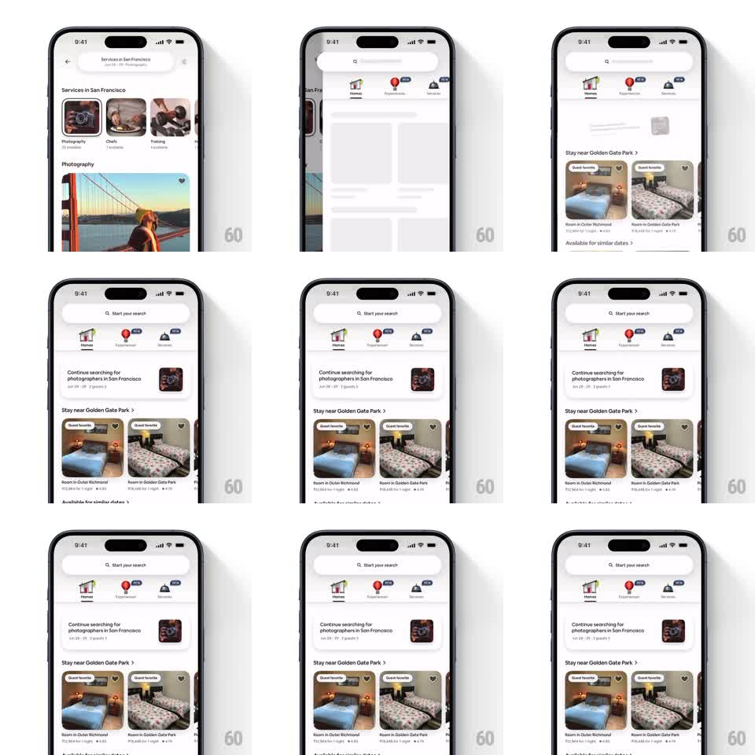

Media
Frame-by-frame

Rebuild this interaction 1:1: Airbnb's "Continue searching" card on the home feed - a scroll-linked reveal where the resume-search card scales up from a slightly shrunken, faded state to full size as it enters the viewport between the header tabs and the listing sections.

Rebuild this interaction 1:1: Airbnb's "Continue searching" card on the home feed - a scroll-linked reveal where the resume-search card scales up from a slightly shrunken, faded state to full size as it enters the viewport between the header tabs and the listing sections. ## Integration Integration: stack-agnostic spec - springs given as stiffness/damping, timed motions as duration + curve; map every value to your framework and animation library of choice. ## Scene White Airbnb home feed. Top: "Start your search" pill, category tabs (Homes, Experiences, Services with NEW badges). Below: a white "Continue searching for photographers in San Francisco" card with dates, guest count, and a square photo thumbnail on the right. Under it: "Stay near Golden Gate Park" section with two Guest favorite listing cards (photo, heart icon, title, price, rating). ## Motion spec Pattern: scroll-driven card scale-and-fade reveal. - The continue-searching card is bound to scroll progress: at the bottom edge of the viewport it renders at scale 0.92, opacity 0.4; it scales to 1.0 and opacity 1.0 as its center reaches ~60% of the viewport height. - The transform anchors on the card's center; the thumbnail and text scale with the card as one unit. - Scrolling back down reverses the effect continuously - the animation is progress-mapped, not triggered once. - Listing cards below use the same mapping, offset by their own viewport position, so the feed ripples into focus as you scroll. - Header (search pill, tabs) stays pinned and unaffected. ## Calibration - The mapping must be linear to scroll position - no spring, no delay; the card feels attached to the scroll. - Scale range is subtle (0.92 -> 1.0); do not overshoot into a bounce. ## Reduced motion Cards render at full scale and opacity at all times; no scroll-linked transform. ## Don't miss - The effect applies per-card as each crosses the viewport band, creating a cascade down the feed. - The card's shadow strengthens slightly as opacity reaches 1.0.